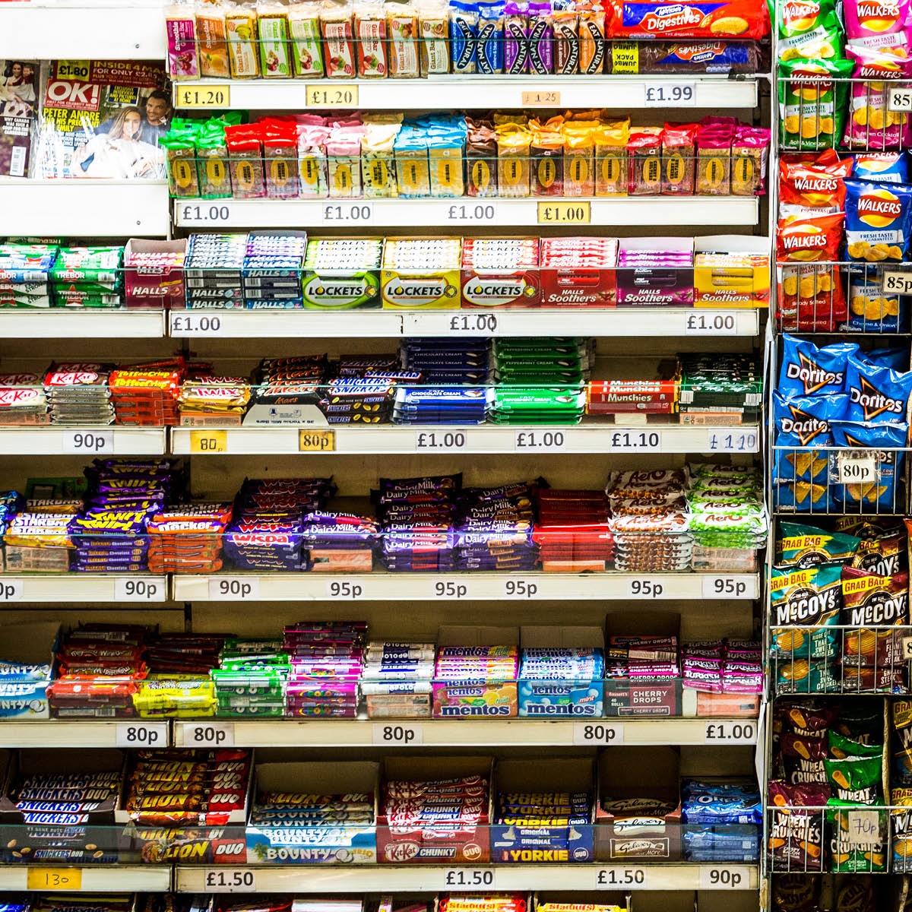

Snacks & confectionery
Something for your shopping break. Ask at the counter about the current selection and price.
Check with the kiosk ↗Haymarket Shopping Centre · Leicester
Newspapers, a snack and a few useful errands. Make Haymarket Kiosk part of your next centre visit.
Call the shop directly0116 253 6033

What the centre lists
The Haymarket tenant listing brings these everyday categories together. Call the kiosk for a particular product or service.
Something for your shopping break. Ask at the counter about the current selection and price.
Check with the kiosk ↗Picking up a paper? Check whether your chosen title is available before making a special trip.
Add it to your stop list ↓The centre lists mobile top-ups through PayPoint. Confirm your network or top-up type directly with the kiosk.
Ask about your top-up ↗The centre lists some bill services through PayPoint. The kiosk must confirm whether a particular bill or service can be handled.
Check your service with the shop ↗A little preparation
Choose what you’re visiting for. We’ll put the questions together so you can check the details with the kiosk.
This local demo asks for no bill, payment, account or personal details. It does not reserve stock or carry out a service.
Local planning only · nothing is sent
Your stop list
Confirm current opening times before a special journey. This list has not been sent and does not confirm stock or service support.
Call 0116 253 6033 ↗Before you make the trip
Ask the kiosk what is available today. The source photo gives a feel for the shop, not a live stock or price list.
Check that the exact service is supported and ask what you need at the counter. Payment methods, limits and service details need direct confirmation.
Open the shopping centre’s plan and look for Haymarket Kiosk. Ask the kiosk if you need help finding the counter.
Open the working centre plan ↗Inside Haymarket Shopping Centre
Use this shop number to check a product, service or visit detail.
The centre says hours may change. Call the kiosk before a special journey.
Your next kiosk stop
Try the proposed shop and visit update sign-up.